7 регионов московского кластера
На пилоте М6 (октябрь 2026) сервис стартует в Тверской области. Расширение на остальные 6 регионов — март–апрель 2027 после прохождения аттестации УЗ-2 ФСТЭК.

Стартовый пилот — Тверская область. Полный охват — апрель 2027.
Тверская область
250 тыс. га залежных земель. По данным Tverlife за Q1 2026 — 99% обследованных земель в нарушениях. Гигантская воронка для S-1 (восстановления). Активная позиция Минсельхоза области.
Программа «Развитие сельского хозяйства Тверской области» 2022–2027 — субсидии на ввод залежных земель в оборот. Декларации в Минсельхоз — до 1 марта.
Ярославская область
400 тыс. га залежных земель — самая большая воронка в кластере. Региональная программа компенсации делает S-1 экономически выгодным даже с подрядчиками: компенсация подготовительных работ.
Программа «Развитие АПК Ярославской области» 2024–2030. Базовая субсидия — 70 тыс ₽/га, для приоритетных культур — до 110 тыс ₽/га.
Калужская область
Решение об изъятии — Министерство экономического развития (а не Минсельхоз, как в других регионах). Это критично для подсудности исков и шапки обращений. AI-3 учитывает.
Развитая АПК-инфраструктура. Близость к промзонам Воротынск/Ворсино/Грабцево делает S-4 (перевод категории) рентабельным.
Московская область
Самый «дорогой» регион кластера. Большой потенциал стратегии S-4 (перевод категории) для участков, граничащих с границами населённых пунктов. Закон субъекта № 75/2004-ОЗ устанавливает особенности оборота.
Извещение дольщиков — через «Ежедневные новости. Подмосковье». Программа «Подмосковное АПК 2025-2030».
Рязанская область
Традиционно сильный сельскохозяйственный регион ЦФО. Активная региональная программа поддержки фермерства упрощает S-2 (аренда). Дефицит арендаторов — локальный.
Закон субъекта № 33-ОЗ. Извещение — через «Рязанские ведомости». Программа «Развитие АПК Рязанской области».
Смоленская область
Удалённые от Москвы районы с низкой ценой земли и активным процессом изъятия. Дефицит арендаторов в дальних районах — стратегия S-2 часто неприменима. Хорошо работают S-1 (восстановление) и S-5 (продажа со скидкой).
Большое количество выявленных нарушений в 2025–2026. Программа «Развитие сельского хозяйства Смоленской области».
Владимирская область
Баланс между близостью к Москве (доступность для ИЖС-перевода) и удалёнными аграрными районами. В Александровском, Кольчугинском, Юрьев-Польском районах — высокая концентрация залежных земель.
Закон субъекта № 39-ОЗ. Извещение дольщиков — через «Владимирские ведомости». Часть земель — наследие колхозной приватизации с большим числом дольщиков.
Регионы × стратегии
Не все стратегии работают одинаково в каждом регионе. Эта таблица — основа алгоритма AI-6 при подборе оптимального пути для конкретного кейса.
| Регион | S-1 восстан. | S-2 аренда | S-3 ВРИ | S-4 перевод | S-5 продажа | S-6 оспорить |
|---|---|---|---|---|---|---|
| Тверская | ✓ | ~ | ✓ | ~ | ✓ | ✓ |
| Калужская | ✓ | ✓ | ✓ | ✓✓ | ✓ | ⚠ |
| Московская | ✓ | ✓✓ | ✓ | ✓✓✓ | ✓ | ✓ |
| Смоленская | ✓ | ~ | ✓ | ~ | ✓ | ✓ |
| Владимирская | ✓ | ✓ | ✓ | ~ | ~ | ✓ |
| Рязанская | ✓ | ✓✓ | ✓ | ~ | ✓ | ✓ |
| Ярославская | ✓✓✓ | ✓✓ | ✓ | ~ | ✓ | ✓ |
Легенда: ✓✓✓ — особо рекомендуется (региональный фактор делает выгодной); ✓✓ — хорошо подходит; ✓ — стандартно применимо; ~ — с ограничениями; ⚠ — особенности процедуры.
Региональные программы поддержки S-1
При выборе стратегии S-1 (восстановление целевого использования) — государство в большинстве регионов компенсирует часть затрат. AI-3 при генерации Плана восстановления учитывает региональную субсидию.
Ярославская
приоритетные культуры
«Развитие АПК Ярославской области» 2024–2030. Базовая субсидия 70 тыс/га, для приоритетных культур (рапс, лён, пшеница) — до 110 тыс/га.
Московская
+ компенсация мелиорации
«Подмосковное АПК 2025-2030». Высокая базовая субсидия + дополнительная компенсация мелиоративных работ для участков с низким плодородием.
Тверская
+ известкование
«Развитие сельского хозяйства Тверской области» 2022–2027. Включает компенсацию подготовительных работ и известкования почв.
Рязанская
+ поддержка фермеров
«Развитие АПК Рязанской области». Дополнительные программы поддержки начинающих фермеров — упрощают S-2 (аренду фермеру).
Размеры субсидий и условия — на основании открытых источников по состоянию на май 2026. Уточняются ежеквартально через Минсельхоз региона.